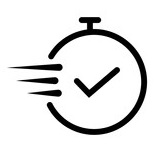
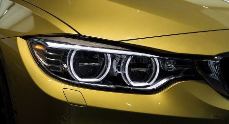
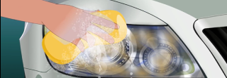
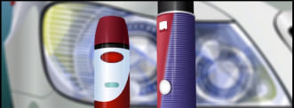

Our restoration process is designed to provide long-lasting results. When headlights are restored by our team and receive proper maintenance, they can maintain their brand-new appearance for up to 4 years. Our restoration method, combined with regular care, ensures that your headlights stay clear, bright, and aesthetically pleasing for an extended period.

MOBILE CAR-HEADLIGHTS RESTORATION IN CENTRAL LONDON
We are here to present high quality service and allow our work to exceed all expectations of professionalism and integrity

We provide fast and friendly mobile service because we know your time is expensive

Our company work only with the high quality products which are used big brand companies.

Why we're so special
Headlights Forever is professional car headlight restoration in Central London. Our expert team is dedicated to restoring the clarity and appearance of your headlights, ensuring optimal visibility and safety on the roads. Using premium quality chemicals is the fastest and the most efficient method to get your headlights looking like brand new for ages.
Why Choose Headlights Forever?
-
Cost-Effective:
Restoring your headlights with us is a cost-effective alternative to replacement. Our services are affordable, allowing you to save money while enhancing the appearance and safety of your vehicle.
-
Mobile Service:
We offer a convenient mobile service, covering various areas in London: Hammersmith, Chelsea, South Kensington, Westminster, the City of London, Wandsworth, Lambeth, and Merton. Our team can come to your location, saving you time and hassle.
-
Expertise:
Our experienced specialists are skilled in restoring headlights to their original condition. We utilize advanced techniques and industry-leading tools to deliver exceptional results.
-
Personalized Solutions:
We understand that each car’s headlights are unique. Our restoration process is tailored to your specific requirements, ensuring a customized approach for optimal results.
-
Professional-Grade Products:
We use high-quality professional-grade chemical products designed specifically for headlight restoration. These products effectively remove oxidation, discoloration, and haze, restoring clarity and brightness to your headlights.
7 Advantages Restoring Your Car Headlights
Safety First
Your safety on the road is our top priority. By restoring your headlights, we ensure optimal visibility, reducing the risk of accidents and improving overall driving safety, especially during nightime travel.
Revive to Perfection
Say goodbye to cloudy, oxidized, and yellowed headlights. Our advanced restoration techniques bring back the glory of your old headlights, transforming them into their original pristine condition. Enjoy a refreshed appearance that enhances the overall aesthetics of your vehicle.
Long-Lasting Results
Extend the lifespan of your headlights with our professional restoration service. We address common issues such as fading and degradation, preserving the quality and functionality of your headlights for years to come.
Value Enhancement
Well-maintained and clear headlights contribute to the overall value of your car. Whether you’re selling your vehicle or simply want to enjoy a pristine look, our restoration service maximizes its resale value and curb appeal.
Cost-Effective Solution
Say goodbye to hefty expenses associated with headlight replacement. Our restoration service offers a cost-effective alternative, saving you money without compromising on quality. Restore your headlights to their former glory and enjoy the benefits of clear, bright illumination without breaking the bank.
MOT Compliance Assurance
Ensure your car passes its MOT test with flying colors. Cloudy or deteriorated headlights can lead to MOT failure. By restoring your headlights, you eliminate the possibility of MOT failure, saving you the inconvenience and expense of retesting.
Step-by-Step DIY Headlight Restoration

1
Clean the Headlights
Start by thoroughly cleaning the headlights using a mild soap or automotive cleaner. Remove any dirt, grime, or debris that may have accumulated on the surface.
2
Sand the Headlights
Gently sand the headlights using fine-grit sandpaper. Begin with a lower grit to remove any surface imperfections, then gradually move to a higher grit for a smoother finish. Avoid excessive sanding, as it can damage the headlights.
3
Polish the Headlights
Apply a quality headlight polish to restore clarity and remove any remaining scratches. Use a clean microfiber cloth and apply the polish in a circular motion. Continue until the headlights regain their shine. Avoid using abrasive or harsh polishes that may further damage the headlights.

4
Seal the Headlights
Protect the restored headlights by applying a UV-resistant sealant or clear coat. This will help prevent future yellowing and keep the headlights looking clear and vibrant. Avoid using sealants that are not specifically designed for automotive headlights, as they may not provide adequate protection.
Safety Tips and Precautions for DIY Headlight Restoration
- Work in a well-ventilated area to avoid inhaling fumes from cleaning and polishing products.
- Wear protective gloves, safety glasses, and a dust mask to shield yourself from chemicals and debris.
- Use caution when sanding to avoid damaging the surrounding areas of the car.
- Avoid using excessive force during the restoration process, as it can lead to unintended damage to the headlights.
What to Avoid
- Using household cleaning products or abrasive materials not specifically designed for headlight restoration, as they may damage the headlights.
- Skipping any of the necessary steps in the restoration process, as each plays a crucial role in achieving the desired results.
- Rushing through the restoration process. Take your time and follow the instructions carefully for the best outcome.
- Performing DIY headlight restoration if you feel unsure or lack the necessary tools and expertise. In such cases, it’s recommended to seek professional assistance.
Maintaining and Extending the Lifespan of Headlights
To keep your restored headlights in optimal condition and prolong their lifespan, follow these maintenance practices:
- Using household cleaning products or abrasive materials not specifically designed for headlight restoration, as they may damage the headlights.
- Skipping any of the necessary steps in the restoration process, as each plays a crucial role in achieving the desired results.
- Rushing through the restoration process. Take your time and follow the instructions carefully for the best outcome.
- Performing DIY headlight restoration if you feel unsure or lack the necessary tools and expertise. In such cases, it’s recommended to seek professional assistance.
At Headlights Forever, we provide expert restoration services and share secret advice during the process to ensure long-lasting results. Our techniques and high-quality materials keep headlights clear for at least two years without additional maintenance.
Frequently Asked Questions
-
Headlights are typically made of polycarbonate plastic, which can be affected by UV rays, environmental factors, and oxidation. This causes the headlights to become cloudy or yellowed over time.
-
-
Headlight restoration is not a permanent solution, as headlights will eventually degrade over time due to environmental factors and UV exposure. However, regular maintenance and proper care can help prolong the results of the restoration.
-
Generally, DIY headlight restoration can take anywhere from 10 minutes to 30 minutes, depending on the specific restoration kit or method used. Professional headlight restoration services usually take around 30 minutes to 1 hour.
-
The cost of headlight restoration (DIY or professional), depends on car model and headlights damage. DIY restoration can range from £30 to £50, while professional services typically cost between £65 to £120.
-
Yes, headlight restoration can help diminish the appearance of minor scratches on headlights. However, deep or severe scratches may require additional repair methods or even headlight replacement.